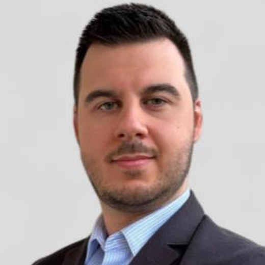

Chercheur post-doctoral au CEA Paris-Saclay Postdoctoral researcher at CEA Paris-Saclay
Steven Compère
Docteur-ingénieur en chimie des matériaux PhD materials chemist & chemical engineer
Je développe des matériaux carbonés nanostructurés (nanotubes de carbone alignés, carbones à gabarit zéolithique), de leur synthèse par CVD à leur caractérisation, leur mise en forme et leurs propriétés d'adsorption. I develop nanostructured carbon materials (aligned carbon nanotubes, zeolite-templated carbons), from CVD synthesis to characterisation, shaping and gas-adsorption properties.
- ProfilsProfiles
- ORCID
- Google Scholar
- GitHub

- articles dans des revues à comité de lecturepeer-reviewed journal articles
- 6
- demande de brevet (Japon, 2025)patent application (Japan, 2025)
- 1
- communications en congrès, dont 5 oralesconference contributions, incl. 5 talks
- 8
- années de R&D, en recherche et en industrieyears of R&D in academia and industry
- 5+
01 · ProfilProfile
Recherche académique et R&D industrielleAcademic research and industrial R&D
Docteur en chimie des matériaux et ingénieur chimiste, je compte plus de cinq ans d'expérience en R&D, en recherche académique comme en industrie. PhD materials chemist and chemical engineer with more than five years of R&D experience, in academic research and in industry.
Chercheur post-doctoral au CEA Paris-Saclay (projet ANR CANELONI), je travaille sur la croissance de nanotubes de carbone alignés par CVD catalytique. Ma thèse à l'IC2MP (Université de Poitiers) portait sur l'élaboration de carbones nanostructurés par CVD et a donné lieu à une demande de brevet et à six articles. As a postdoctoral researcher at CEA Paris-Saclay (ANR CANELONI project), I work on the growth of aligned carbon nanotubes by catalytic CVD. My PhD at IC2MP (University of Poitiers) focused on the design of nanostructured carbons by CVD and led to a patent application and six articles.
Mon expertise couvre les procédés CVD et la caractérisation avancée des matériaux (MEB/MET, Raman, XPS, DRX, physisorption, ATG, RMN du solide, RPE). Elle est complétée par deux années de R&D industrielle chez UCB Pharma sous normes GMP/GLP : validation de méthodes, traçabilité et collaboration avec les équipes Formulation, Procédés et Production. My expertise covers CVD processes and advanced materials characterisation (SEM/TEM, Raman, XPS, XRD, physisorption, TGA, solid-state NMR, EPR). It is complemented by two years of industrial R&D at UCB Pharma under GMP/GLP: method validation, traceability and close work with Formulation, Process and Production teams.
- Poste actuelCurrent position
- Chercheur post-doctoral, CEA Paris-Saclay (NIMBE / LEDNA)Postdoctoral researcher, CEA Paris-Saclay (NIMBE / LEDNA)
- DoctoratPhD
- Chimie des matériaux, Université de Poitiers, 2025Materials chemistry, University of Poitiers, 2025
- Diplôme d'ingénieurEngineering degree
- Ingénieur industriel en chimie, HELHa (Belgique), 2020Industrial engineer in chemistry, HELHa (Belgium), 2020
- LanguesLanguages
- Français (langue maternelle), anglais (C1)French (native), English (C1)
- NationalitéNationality
- Belge (citoyen de l'Union européenne)Belgian (EU citizen)
- LocalisationBased in
- Paris-Saclay, Île-de-France
02 · ParcoursExperience
Expérience professionnelleProfessional experience
-
06.2026 — auj.06.2026 — nowGif-sur-Yvette
Chercheur post-doctoralPostdoctoral researcher
En posteCurrentCEA Paris-Saclay, laboratoirelaboratory NIMBE / LEDNA · croissance de nanotubes de carbone et membranescarbon nanotube growth and membranes
- Projet ANR CANELONI (membranes à base de nanotubes de carbone alignés) : croissance de tapis de VACNT par CVD catalytique assistée par aérosol (paramètres, précurseurs, catalyseur ferrocène).
- Caractérisation des tapis (MEB, MET, Raman, ATG) et interprétation (qualité, diamètre des nanotubes, densité, alignement) pour piloter les conditions de croissance.
- Fabrication de membranes nanoporeuses, dont gravure plasma RIE ; proposition de nouveaux modes opératoires et axes de recherche (promoteur soufré, substrats zéolithiques nanostructurés).
- ANR CANELONI project (aligned carbon nanotube membranes): growth of VACNT carpets by aerosol-assisted catalytic CVD (process parameters, precursors, ferrocene catalyst).
- Characterisation of the carpets (SEM, TEM, Raman, TGA) and interpretation (quality, nanotube diameter, density, alignment) to steer growth conditions.
- Fabrication of nanoporous membranes, including RIE plasma etching; proposed new operating procedures and research directions (sulfur promoter, nanostructured zeolite substrates).
-
10.2022 — 10.2025Poitiers & Anglet
Doctorant en chimie des matériauxPhD candidate in materials chemistry
IC2MP (CNRS / Université de PoitiersUniversity of Poitiers) & LFCR (Université de PauUniversity of Pau)
- Développement et optimisation de procédés CVD d'éthylène (jusqu'à 1 000 °C) et de voies hybrides (voie solide et co-alimentation CVD) pour contrôler la structure et la porosité de carbones microporeux (ZTC).
- Modification, maintenance et réparation de bâtis CVD ; conception (plans) d'un réacteur rotatif de montée en échelle, du mg au g : schéma de procédé, spécifications d'équipement, fenêtres opératoires.
- Synthèse d'un nouveau carbone microporeux de type lamellaire, ayant abouti au dépôt d'une demande de brevet avec l'Université nationale de Yokohama (Japon, 2025).
- Relations structure–propriétés (acidité de la zéolithe, cation compensateur, température de synthèse) établies en croisant DRX, Raman, XPS, physisorption, RMN du solide et RPE ; 6 articles, dont 3 en premier auteur.
- Mise en forme de pastilles de ZTC robustes ; mesures d'adsorption haute pression (CO2, CH4, H2) et de déformation induite par corrélation d'images numériques (mission de 3 mois au LFCR).
- Campagnes de caractérisation au CEMHTI (Orléans, RMN du solide) et au LASIRe (Lille, RPE) ; formation et encadrement complet d'un stagiaire de M1 pendant 3 mois.
- Developed and optimised ethylene CVD processes (up to 1,000 °C) and hybrid routes (solid-state and CVD co-feeding) to control the structure and porosity of microporous carbons (ZTC).
- Modified, maintained and repaired CVD rigs; designed (drawings) a rotary reactor for scale-up from mg to g: process flow diagram, equipment specifications, operating windows.
- Synthesised a new lamellar-type microporous carbon, leading to a patent application filed with Yokohama National University (Japan, 2025).
- Established structure–property relationships (zeolite acidity, counter-cation, synthesis temperature) by combining XRD, Raman, XPS, physisorption, solid-state NMR and EPR; 6 articles, 3 as first author.
- Shaped robust ZTC pellets; high-pressure adsorption (CO2, CH4, H2) and adsorption-induced deformation measurements by digital image correlation (3-month secondment at LFCR).
- Characterisation campaigns at CEMHTI (Orléans, solid-state NMR) and LASIRe (Lille, EPR); trained and fully supervised a master's (M1) intern for 3 months.
-
09.2020 — 08.2022Braine-l'Alleud, BelgiqueBraine-l'Alleud, Belgium
Ingénieur R&D en science des matériauxR&D engineer in materials science
UCB Pharma (consultantconsultant with Jefferson Wells)
- Gestion de projets de caractérisation physique en environnement GMP/GLP, du plan d'expériences et du développement/validation de méthodes analytiques jusqu'à l'analyse des données et au rapport.
- Mise en œuvre d'un large parc de caractérisation des poudres : rhéomètre FT4, cellule de cisaillement Schulze, Granutools, granulométrie laser, morphogranulométrie, DVS, densité tapée, DRX, MEB, microscopie optique.
- Formation et coordination de collègues sur les méthodes et instruments de caractérisation.
- Collaboration avec les équipes Formulation, Procédés et Production pour résoudre des problèmes industriels et soutenir l'innovation, y compris en salles blanches GMP.
- Mise en place du 5S dans l'échantillothèque (plus de 5 000 échantillons) : traçabilité totale et intégrité des stocks.
- Managed physical characterisation projects in a GMP/GLP environment, from design of experiments and analytical method development/validation to data analysis and reporting.
- Operated a broad powder characterisation suite: FT4 rheometer, Schulze shear cell, Granutools, laser diffraction, morpho-granulometry, DVS, tapped density, XRD, SEM, optical microscopy.
- Trained and coordinated colleagues on characterisation methods and instruments.
- Worked with Formulation, Process and Production teams to solve industrial issues and support innovation, including in GMP cleanrooms.
- Implemented 5S in the sample library (over 5,000 samples): full traceability and stock integrity.
-
09.2019 — 12.2019Braine-l'Alleud, BelgiqueBraine-l'Alleud, Belgium
Stagiaire en science des matériauxMaterials science intern
UCB Pharma · mémoire de mastermaster's thesis
- Base de données de référence des excipients et analyse multivariée (ACP) pour identifier les tests redondants et rendre la stratégie analytique plus efficiente.
- Reference database of excipients and multivariate analysis (PCA) to identify redundant tests and make the analytical strategy more efficient.
-
01.2017 — 05.2017Feluy, BelgiqueFeluy, Belgium
Stagiaire en chimie analytiqueAnalytical chemistry intern
TotalEnergies · mémoire de bachelierbachelor's thesis
- Développement d'un protocole d'analyse par spectroscopie UV-Vis en réflexion diffuse pour comparer les états d'activation de catalyseurs métallocènes supportés sur silice, préalablement synthétisés.
- Developed a diffuse-reflectance UV-Vis protocol to compare the activation states of silica-supported metallocene catalysts, synthesised beforehand.
03 · Publications
Publications, brevet & logicielPublications, patent & software
Articles dans des revues internationales à comité de lecture. D'autres manuscrits en premier auteur sont en préparation, dont une revue. Articles in international peer-reviewed journals. Further first-author manuscripts are in preparation, including a review.
-
2026
Functionalized zeolite-templated carbons via solid-gas co-feeding synthesis
Microporous and Mesoporous Materials 417 (2027) 114414
-
2026
Influence of the zeolite counter-ion on the properties of zeolite-templated carbons
Microporous and Mesoporous Materials 407 (2026) 114107
-
2025
Zeolite-templated carbon pellets by in situ generated binder: deformation behavior under high-pressure CO2 adsorption
Microporous and Mesoporous Materials 399 (2026) 113837
-
2025
Porous carbon-based material and method for producing porous carbon-based material
Demande de brevet japonais n° 25006, déposée le 17 septembre 2025 avec l'Université nationale de Yokohama Japanese patent application no. 25006, filed 17 September 2025 with Yokohama National University
-
2024
N,S-doped zeolite-templated carbon like supported NixFeySz as an efficient bifunctional catalyst for rechargeable zinc–air batteries
ChemCatChem 16 (2024) e202400555
-
2024
Impact of thermal ethylene degradation in zeolite-templated carbon synthesis
Microporous and Mesoporous Materials 367 (2024) 112967
-
2023
Acidity: a key parameter in zeolite-templated carbon formation
Small 19 (2023) 2300972
AdsorpSuite
v3.0 · Python · 2026
Application Python à interface graphique, dédiée à l'analyse thermodynamique des isothermes d'adsorption de matériaux poreux (carbones, zéolithes, MOF). Code ouvert et citable grâce à son DOI Zenodo. Python desktop application for the thermodynamic analysis of adsorption isotherms on porous materials (carbons, zeolites, MOFs). Open code, citable through its Zenodo DOI.
- 7 modèles d'isothermes (Langmuir, double Langmuir, Freundlich, Sips, Toth, Dubinin-Radushkevich, Dubinin-Astakhov) et ajustement non linéaire multi-départ. 7 isotherm models (Langmuir, dual-site Langmuir, Freundlich, Sips, Toth, Dubinin-Radushkevich, Dubinin-Astakhov) with multi-start non-linear fitting.
- Statistiques robustes : intervalles de confiance à 95 % par bootstrap, classement AIC/BIC, analyse de colinéarité. Robust statistics: 95% bootstrap confidence intervals, AIC/BIC ranking, collinearity analysis.
- Conversion excès → absolu : densité du gaz par l'équation d'état de Peng-Robinson (translation de Péneloux) ou CoolProp. Excess-to-absolute conversion: gas density from the Peng-Robinson equation of state (Péneloux translation) or CoolProp.
- IAST : prédiction de l'adsorption de mélanges binaires et ternaires. IAST: adsorption predictions for binary and ternary mixtures.
Liste à jour et citations :Up-to-date list and citations: Google Scholar · ORCID · ResearchGate
04 · Communications
Communications en congrèsConference contributions
8 communications dans des congrès nationaux et internationaux entre 2023 et 2025, dont 5 présentations orales. 8 contributions to national and international conferences between 2023 and 2025, including 5 oral presentations.
-
MaiMay 2025Porto
Self-supported zeolite-templated carbon wafers for gas adsorption and induced deformation studies
-
AvrilApril 2025Blériot-Plage
From solid precursors to zeolite-templated carbons: a molecular odyssey toward porous carbon materials
-
AvrilApril 2025Blériot-Plage
Role of the zeolite counter-ion in controlling the synthesis of zeolite-templated carbons
-
Juil.July 2024Osaka
Zeolite-templated carbons: a new solid-state synthesis route
-
MarsMarch 2024La Rochelle
Explore solid-state synthesis in the quest of achieving zeolite-templated carbons
-
Juil.July 2023Portorož
Advances in zeolite-templated carbon synthesis: investigating the effect of temperature and zeolite acidity
-
MarsMarch 2023Obernai
Impact of the ethylene transformation mechanism in the synthesis of zeolite-templated carbons
-
MarsMarch 2023Poitiers
Micropore 3D graphenes: circumventing essential issues in large scale synthesis
05 · CompétencesSkills
Compétences clésKey skills
- Procédés CVDCVD processes
- CVD catalytique assistée par aérosol (VACNT) ; CVD d'éthylène jusqu'à 1 000 °C ; voies hybrides solide/CVD ; gestion des flux gazeux ; optimisation de procédés ; gravure RIE. Aerosol-assisted catalytic CVD (VACNT); ethylene CVD up to 1,000 °C; hybrid solid/CVD routes; gas-flow management; process optimisation; RIE etching.
- CaractérisationCharacterisation
- MEB/EDS, MET, Raman, XPS, DRX, FT-IR, UV-Vis, RPE, RMN du solide, ATG/DSC, physisorption (N2, Ar, CO2), porosimétrie Hg, pycnométrie He, CHNS, ICP-OES. SEM/EDS, TEM, Raman, XPS, XRD, FT-IR, UV-Vis, EPR, solid-state NMR, TGA/DSC, physisorption (N2, Ar, CO2), Hg porosimetry, He pycnometry, CHNS, ICP-OES.
- Mesures électriquesElectrical measurements
- Conductivité par spectroscopie d'impédance ; charge électrostatique sur banc maison. Conductivity by impedance spectroscopy; electrostatic charge on an in-house bench.
- Bâtis expérimentauxExperimental rigs
- Modification, maintenance et réparation de bâtis ; conception d'un réacteur rotatif de montée en échelle ; adsorption de gaz haute pression et mesures de déformation. Modification, maintenance and repair of rigs; design of a rotary scale-up reactor; high-pressure gas adsorption and deformation measurements.
- Gestion de projetProject management
- Gestion de projets R&D, collaborations (CEMHTI, LASIRe, LFCR, Université nationale de Yokohama), brevet, 8 communications, veille technologique. R&D project management, collaborations (CEMHTI, LASIRe, LFCR, Yokohama National University), patent, 8 conference contributions, technology watch.
- Qualité & sécuritéQuality & safety
- BPF/BPL (GMP/GLP), développement et validation de méthodes, traçabilité, 5S, Lean, culture HSE, manipulation d'acide fluorhydrique (HF), pratiques de salle blanche (GMP). GMP/GLP, method development and validation, traceability, 5S, Lean, HSE culture, hydrofluoric acid (HF) handling, cleanroom practice (GMP).
- EncadrementSupervision
- Encadrement complet d'un stagiaire de M1 ; formation et coordination de collègues. Full supervision of a master's (M1) intern; training and coordination of colleagues.
- Données & outilsData & tools
- Python (traitement de données, modélisation IAST, codage assisté par IA ; auteur du logiciel libre AdsorpSuite), OriginLab, ImageJ, SIMCA (ACP). Python (data processing, IAST modelling, AI-assisted coding; author of the open-source AdsorpSuite software), OriginLab, ImageJ, SIMCA (PCA).
- LanguesLanguages
- Français (langue maternelle), anglais (C1). French (native), English (C1).
06 · FormationEducation
Formation & engagementsEducation & involvement
DiplômesDegrees
-
Doctorat en chimie des matériauxPhD in materials chemistry
2022–2025Université de PoitiersUniversity of Poitiers (IC2MP)
Thèse : « Zeolite-Templated Carbons : synthèse, fonctionnalisation, mise en forme et étude des déformations induites par l'adsorption de gaz à haute pression », soutenue en octobre 2025. Direction : A. Sachse, I. Batonneau-Gener (IC2MP), L. Perrier (LFCR). Thesis: “Zeolite-Templated Carbons: synthesis, functionalisation, shaping and study of deformations induced by high-pressure gas adsorption”, defended in October 2025. Supervisors: A. Sachse, I. Batonneau-Gener (IC2MP), L. Perrier (LFCR).
-
Diplôme d'ingénieur industriel en chimieIndustrial engineering degree in chemistry
2017–2020Haute École Louvain en Hainaut (HELHa), BelgiqueBelgium
Mémoire : « Caractérisation physique d'excipients pharmaceutiques ».Thesis: “Physical characterisation of pharmaceutical excipients”.
-
Bachelier en chimie appliquéeBachelor's degree in applied chemistry
2014–2017Haute École Louvain en Hainaut (HELHa), BelgiqueBelgium
Formations complémentairesFurther training
-
Microscopie électronique en transmission (MET)Transmission electron microscopy (TEM)
2026LPICM, École polytechnique
-
Une année de cours du soir en sciences de gestion (programme de master)One year of evening courses in management (master's programme)
2021–2022UCLouvain, BelgiqueBelgium
EngagementsInvolvement
- Conseil de laboratoire de l'IC2MPIC2MP laboratory council Représentant élu des non-permanents (2022–2023) : participation aux décisions stratégiques et budgétaires. Elected representative of non-permanent staff (2022–2023): involved in strategic and budget decisions.
- Picta'Sciences Organisation d'événements scientifiques pour les doctorants de l'Université de Poitiers. Organisation of scientific events for PhD students at the University of Poitiers.
- EncadrementSupervision Formation et encadrement complet d'un stagiaire de Master 1 pendant 3 mois. Trained and fully supervised a first-year master's intern for 3 months.
Contact
Discutons de vos projets.Let's talk about your projects.
Ouvert aux collaborations de recherche, aux projets de R&D industrielle et aux échanges autour des matériaux carbonés, des procédés CVD et de l'adsorption. Open to research collaborations, industrial R&D projects and discussions on carbon materials, CVD processes and adsorption.
- E-mailcompere.steven@gmail.com
- LinkedInin/steven-compere
- ORCID0009-0006-3474-8748
- GitHubstevencompere
- LocalisationLocationParis-Saclay, France